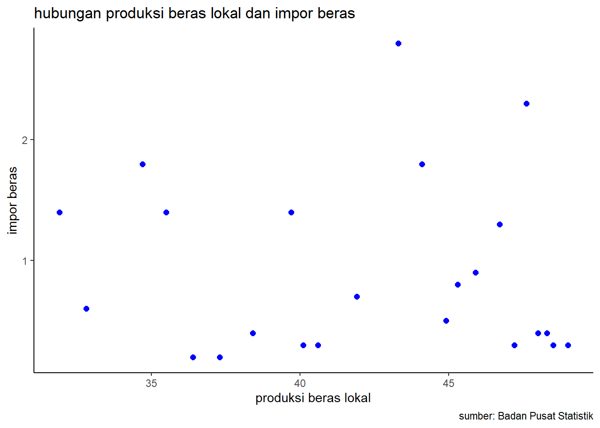

library(tidyverse)
library(readxl)
library(writexl)
library(dplyr)
library(kableExtra)Pengaruh Produksi Beras Lokal terhadap Impor Beras di Indonesia Tahun 2000 Hingga 2022
Metode Penelitian Politeknik APP Jakarta

1 Pendahuluan
1.1 Latar belakang
Beras merupakan salah satu makanan pokok manusia terutama yang hidup di negara negara Asia, termasuk Indonesia. sehingga tidak heran jika konsumsi dan kebutuhan akan beras di Indonesia dan negara negara lain yang menjadikan beras menjadi sumber karbohidrat pokok menjadi yang utama untuk di konsumsi. tidak heran jika beras menjadi komoditi terpenting bagi Indonesia terutama untuk kepentingan masyarakat nya sebagai konsumsi, dan beras Indonesia pun bisa digunakan untuk kepentingan ekspor Indonesia.
Beras merupakan gabah (butiran padi) yang bagian kulit luarnya sudah dibuang dengan cara digiling atau disosoh. Cita rasa dan mutu masak dari beras ditentukan oleh banyaknya kadar amilosa dan amilopektinnya. dan juga cara memasak dari beras itu sendiri yang dapat mempengaruhi bagaimana rasa dan tekstur dari beras yang akan di konsumsi. sehingga beras tersebut dapat disajikan dan dimakan lebih nikmat oleh seluruh kalangan masyarakat.
bagi masyarakat Indonesia, beras menjadi faktor utama dalam memulai segala aktifitas. beras yang sudah diolah menjadi nasi menjadi makanan pokok utama yang dapat disajikan dengan beberapa lauk yang merupakan hasil dari komoditi Indonesia juga. memakan nasi bukan hanya menjadi makanan pokok orang orang Indonesia, namun sudah menjadi habbit/kebiasaan orang orang Indonesia untuk memulai hari. bahkan terkadang ada omongan seperti makan apapun belum cukup jika tidak makan nasi. itu menjadi kebiasaan orang Indonesia yang menganggap bahwa makan adalah ketika sudah memakan nasi.
Karena nasi juga sudah menjadi makanan utama yang tidak hanya di konsumsi oleh orang dewasa namun juga dikonsumsi semua kalangan usia, dari anak kecil, remaja, dewasa hingga lansia sekalipun. karena kebiasaan memakan nasi tersebut yang sudah di turunkan dari tahun ke tahun yang menjadikan nya terus bertahan hingga sekarang. Padahal sumber karbohidrat utama tidak hanya didapatkan dari nasi saja namun juga bisa dari singkong, umbi umbian namun tetap saja nasi selalu menjadi yang paling dicari oleh orang- orang Indonesia. faktor tersebutlah yang membuat mengapa pemerintah Indonesia tetap membutuhkan impor beras dari negara luar untuk memenuhi kebutuhan konsumsi masyarakat terhadap beras. dan juga import tersebut juga bertujuan untuk menjaga kestabilan beras lokal dan juga menjaga kestabilan harga beras tersebut. beras lokal juga tidak kehabisan stok jika sewaktu-waktu terdapat situasi dan kondisi yang darurat pangan.
1.2 Ruang lingkup
Ada dua variabel yang digunakan sebagai objek penelitian, yaitu objek data berupa produksi beras lokal di Indonesia sebagai variabel x, serta data objek impor beras Indonesia sebagai variabel y. Peneliti mengambil data dari Badan Pusat Statistik (BPS), dengan data bersifat time series dalam kurun waktu periode 2000 hingga 2022.
1.3 Rumusan masalah
Apakah produksi beras lokal mempengaruhi impor beras di Indonesia ?
Bagaimana hubungan produksi beras lokal dan impor beras di Indonesia ?
1.4 Tujuan dan manfaat penelitian
Penelitian ini bertujuan untuk mengkaji pengaruh produksi beras lokal terhadap impor beras di Indonesia selama periode 2000-2022. Manfaat penelitian ini adalah untuk memberikan informasi dan rekomendasi kepada pemerintah dan pelaku usaha dalam mengelola kebijakan impor beras yang sesuai dengan kondisi produksi dan konsumsi beras di dalam negeri. Penelitian ini juga diharapkan dapat memberikan kontribusi bagi pengembangan ilmu ekonomi, khususnya dalam bidang perdagangan internasional dan pertanian.
1.5 Package
Packages yang digunakan antara lain sebagai berikut:
2 Studi pustaka
Kebijakan Pangan Nasional
Rumah tangga Indonesia, khususnya rumah tangga pertanian, paling sering terkena ancaman berupa hilangnya produksi non-pertanian dan hilangnya lapangan kerja, sehingga berdampak pada berkurangnya pendapatan rumah tangga sehingga terjaminnya ketahanan pangan. Produksi dan pendapatan rumah tangga hanya mampu memenuhi kebutuhan pangan dalam jumlah cukup, dan dalam beberapa kasus, beberapa rumah tangga tidak mampu memenuhi kebutuhan sehari-harinya. Petani seringkali tidak mempunyai kapasitas untuk mengatasi krisis pangan dan pendapatan.
Ketersediaan Beras Nasional
Badan Pangan Nasional (Bapanas) memperkirakan stok akhir beras di negara ini akan mencapai 7,69 juta ton pada akhir tahun 2023. Jumlah tersebut merupakan stok awal beras yang diproduksi pada tahun 2024 dan masa kadaluwarsanya adalah 93 hari. Sedangkan persediaan akhir periode ditentukan dari perkiraan total pasokan beras sebanyak 58,53 juta ton hingga akhir Desember 2023. Angka tersebut dihitung dari persediaan awal sebanyak 4,06 juta ton pada tahun 2023. Dengan demikian perkiraan produksi beras Januari-Desember 2023 adalah 31,56 juta ton. Dan diperkirakan Indonesia akan mengimpor beras sebanyak 2,91 juta ton pada tahun ini. Data ini dikurangi dengan kebutuhan beras Indonesia yang diperkirakan mencapai 30,84 juta ton pada tahun 2023. Sedangkan rata-rata kebutuhan beras per bulan sebesar 2,57 juta ton. Melihat besarnya jumlah kebutuhan konsumsi beras nasional di atas, memang butuh ketersediaan komoditi beras yang menjadi sumber utama kebutuhan orang Indonesia, sehingga lazim bagi pemerintah Indonesia untuk tetap melakukan impor beras ke negara lain, untuk memenuhi kebutuhan akan besarnya kebutuhan beras masyarakat Indonesia yang menjadikan nasi sebagai karbohidrat utama di atas komoditi yang lain.
3 Metode penelitian
3.1 Data
| Tahun | PBL | IB | |
|---|---|---|---|
| 1 | 2000 | 31,9 | 1,4 |
| 2 | 2001 | 32,8 | 0,6 |
| 3 | 2002 | 34,7 | 1,8 |
| 4 | 2003 | 35,5 | 1,4 |
| 5 | 2004 | 36,4 | 0,2 |
| 6 | 2005 | 37,3 | 0,2 |
| 7 | 2006 | 38,4 | 0,4 |
| 8 | 2007 | 39,7 | 1,4 |
| 9 | 2008 | 40,1 | 0,3 |
| 10 | 2009 | 40,6 | 0,3 |
| 11 | 2010 | 41,9 | 0,7 |
| 12 | 2011 | 43,3 | 2,8 |
| 13 | 2012 | 44,1 | 1,8 |
| 14 | 2013 | 44,9 | 0,5 |
| 15 | 2014 | 45,3 | 0,8 |
| 16 | 2015 | 45,9 | 0,9 |
| 17 | 2016 | 46,7 | 1,3 |
| 18 | 2017 | 47,2 | 0,3 |
| 19 | 2018 | 47,6 | 2,3 |
| 20 | 2019 | 48 | 0,4 |
| 21 | 2020 | 48,3 | 0,4 |
| 22 | 2021 | 48,5 | 0,3 |
| 23 | 2022 | 49 | 0,3 |
Data yang digunakan bersifat time series periode tahun 2000 hingga 2022 yang diambil dari Badan Pusat Statistik (BPS) berupa produksi beras lokal (PBL) dan impor beras (IB) di Indonesia dalam juta ton, sehingga didapatkan data produksi beras sebagai variabel x dan data impor beras sebagai variabel y. Data inilahh yang nantinya akan digunakan sebagai objek penelitian.
library(readxl)
berasarya<-read_excel("C:/metopen/uasarya/berasarya.xlsx")
head(berasarya)# A tibble: 6 × 3
Tahun x y
<dbl> <dbl> <dbl>
1 2000 31.9 1.4
2 2001 32.8 0.6
3 2002 34.7 1.8
4 2003 35.5 1.4
5 2004 36.4 0.2
6 2005 37.3 0.2library("ggplot2")
library("readxl")
library("dplyr")
ggplot(data=berasarya,aes(x=x,y=y))+
geom_point(color="blue",size=2)+
labs(title="hubungan produksi beras lokal dan impor beras",
x="produksi beras lokal",
y="impor beras",
caption = "sumber: Badan Pusat Statistik")+
theme_classic()
3.2 Metode analisis
Metode analisis yang digunakan dalam penelitian ini adalah metode regresi univariat. Metode ini digunakan untuk menguji pengaruh variabel independen terhadap variabel dependen secara statistik. Variabel independen dalam penelitian ini adalah produksi beras lokal, sedangkan variabel dependen adalah impor beras. Data produksi dan impor beras di Indonesia dari tahun 2000 hingga 2022 diperoleh dari Badan Pusat Statistik (BPS). Spesifikasi yang dilakukan sebagai berikut:
\[ y_{t}=\beta_0 + \beta_1 x_t+\mu_t \] di mana \(y_t\) adalah impor beras dan \(x_t\) adalah produksi beras lokal.
4 Pembahasan
4.1 Pembahasan masalah
Hasil regresi:
| Coefficients | Estimate | Pr |
|---|---|---|
| Intercept | 1.36206 | 0.289 |
| x | -0.01087 | 0.716 |
Hasil dimasukkan ke dalam rumus persamaan dan menghasilkan:
\[ y_{t}=\ 1.36206 - \ 0.01087 x+\mu_t \]
Nilai koefisien regresi β1 menunjukkan bahwa setiap kenaikan satu ton produksi beras lokal akan menurunkan impor beras sebesar 0.01087 ton, dengan asumsi variabel lain konstan.
Nilai p-value untuk β1 adalah 0.716, yang berarti tidak ada bukti yang cukup untuk menolak hipotesis nol bahwa produksi beras lokal tidak berpengaruh terhadap impor beras. Dengan kata lain, tidak ada hubungan yang signifikan antara produksi beras lokal dan impor beras pada tingkat signifikansi 5%.
4.2 Analisis masalah
Hasil regresinya adalah
library(readxl)
berasarya<-read_excel("berasarya.xlsx")
reg<-lm(y~x,data=berasarya)
summary(reg)
Call:
lm(formula = y ~ x, data = berasarya)
Residuals:
Min 1Q Median 3Q Max
-0.7662 -0.5396 -0.3738 0.4349 1.9088
Coefficients:
Estimate Std. Error t value Pr(>|t|)
(Intercept) 1.36206 1.25274 1.087 0.289
x -0.01087 0.02953 -0.368 0.716
Residual standard error: 0.7513 on 21 degrees of freedom
Multiple R-squared: 0.006416, Adjusted R-squared: -0.0409
F-statistic: 0.1356 on 1 and 21 DF, p-value: 0.7164Nilai R-squared adalah 0.006416, yang berarti bahwa hanya 0.64% variasi impor beras yang dapat dijelaskan oleh variasi produksi beras lokal. Nilai ini sangat rendah, yang mengindikasikan bahwa model regresi tidak memiliki kemampuan prediksi yang baik.
Sedangkan nilai F-statistic adalah 0.1356, yang berarti bahwa model regresi secara keseluruhan tidak signifikan pada tingkat signifikansi 5%. Hal ini mengkonfirmasi bahwa produksi beras lokal tidak berpengaruh terhadap impor beras.
5 Kesimpulan
Dari analisis di atas, dapat disimpulkan bahwa model regresi univariat yang digunakan dalam penelitian ini tidak sesuai dengan data dan tidak dapat digunakan untuk menguji pengaruh produksi beras lokal terhadap impor beras di Indonesia. Peneliti perlu mencari variabel lain yang mungkin berpengaruh terhadap impor beras, atau menggunakan metode analisis yang lebih kompleks, seperti regresi multivariat atau regresi non-linier.
Faktor yang mungkin menyebabkan Produksi beras lokal tidak mempengaruhi impor beras Indonesia, karena impor beras lebih ditentukan oleh faktor-faktor lain, seperti:
Permintaan beras yang terus meningkat seiring dengan pertumbuhan penduduk, sementara produksi beras tidak mampu mengimbangi kebutuhan. Hal ini menyebabkan kekurangan pasokan beras di dalam negeri, sehingga pemerintah harus mengimpor beras dari luar negeri untuk memenuhi kebutuhan konsumen.
Harga beras yang lebih tinggi daripada harga beras impor, sehingga menguntungkan para importir dan pedagang. Hal ini menyebabkan ketidakberdayaan produsen beras lokal, yang harus bersaing dengan harga beras impor yang lebih murah. Selain itu, harga beras lokal juga dipengaruhi oleh biaya produksi yang tinggi, seperti biaya pupuk, benih, irigasi, tenaga kerja, dan transportasi.
Kurs rupiah yang melemah terhadap mata uang asing, sehingga membuat impor beras lebih murah. Hal ini menyebabkan ketergantungan Indonesia terhadap beras impor, terutama dari negara-negara seperti Vietnam, Thailand, India, dan Pakistan. Kurs rupiah juga dipengaruhi oleh faktor eksternal, seperti kondisi politik, ekonomi, dan sosial di dunia.
Luas lahan panen padi yang terbatas dan mengalami penurunan akibat alih fungsi lahan, bencana alam, dan perubahan iklim. Hal ini menyebabkan penurunan produktivitas beras lokal, yang tidak sebanding dengan pertumbuhan penduduk. Lahan panen padi juga dipengaruhi oleh faktor internal, seperti kebijakan pemerintah, infrastruktur, teknologi, dan sumber daya manusia.
6 Referensi
Armaini, D., & Gunawan, E. (2016). Pengaruh produksi beras, harga beras dalam negeri dan produk domestik bruto terhadap impor beras Indonesia. Jurnal ilmiah mahasiswa ekonomi pembangunan, 1(2), 455-466.
Ruvananda, A. R., & Taufiq, M. (2022). Analisis faktor-faktor yang mempengaruhi impor beras di Indonesia. KINERJA: Jurnal Ekonomi dan Manajemen, 19(2), 195-204.
Sanny, L. (2010). Analisis produksi beras di Indonesia. Binus Business Review, 1(1), 245-251.
Rahayu, S. E., & Febriaty, H. (2019, October). Analisis perkembangan produksi beras dan impor beras di Indonesia. In Prosiding Seminar Nasional Kewirausahaan (Vol. 1, No. 1, pp. 219-226).